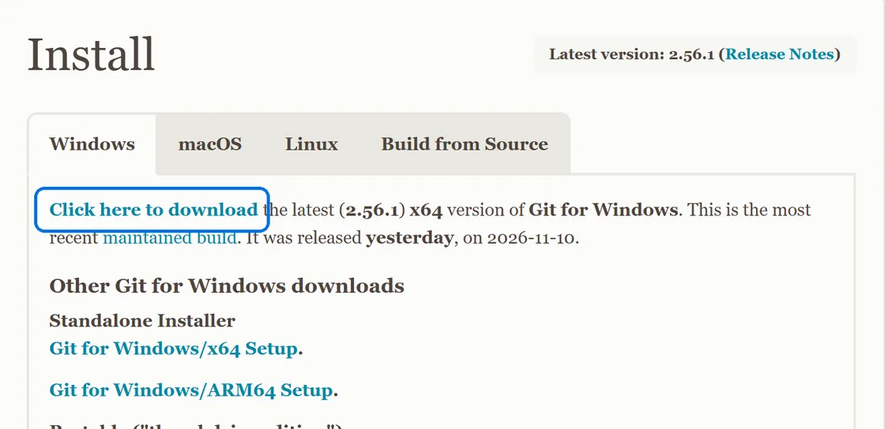
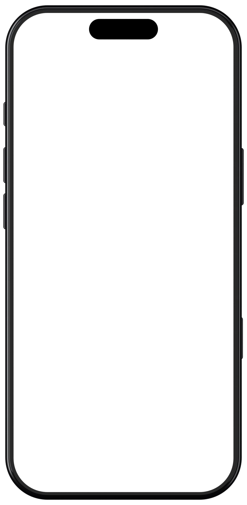
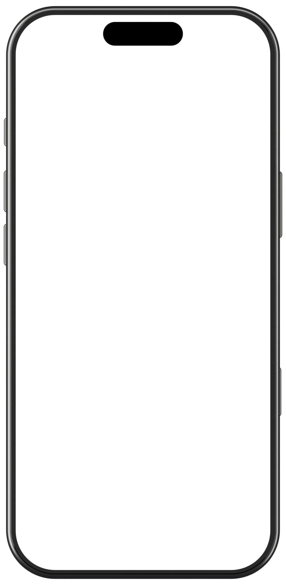

Git для Claude Code и Codex
Сломал проект? Вернёшь одной фразой
Шаги ниже подстроятся под твой выбор
Что понадобится
- Компьютер на Windows 10, 11 или Mac
- Для Claude Code нужна подписка Claude Pro или выше. На бесплатном тарифе его нет
- Для Codex хватит любого аккаунта ChatGPT, даже бесплатного
- Папка с проектом. Если проекта ещё нет, создай пустую папку, например my-app
Шаг 1 из 4
Поставь Git
- Открой git-scm.com и нажми «Click here to download»
- Запусти скачанный файл и нажимай Next до конца, ничего не меняя

Или одной командой в PowerShell
winget install --id Git.Git -e --source winget- Открой Терминал: Cmd + Пробел и набери «Терминал»
- Вставь команду и нажми «Установить» в окне, которое появится
xcode-select --installПроверка: открой терминал заново
git --versiongit version 2.56.1. Цифры могут быть другимиШаг 2 из 4
Войди в GitHub
- Зарегистрируйся на github.com. Это бесплатно
- Поставь GitHub CLI. Через него ClaudeCodex выкладывает проект от твоего имени
winget install --id GitHub.cli --source wingetbrew install ghЕсли пишет «command not found: brew», скачай установщик для Mac на cli.github.com
Закрой терминал, открой заново и войди
gh auth login> gh auth login ? Where do you use GitHub? GitHub.com ? What is your preferred protocol for Git operations on this host? HTTPS ? Authenticate Git with your GitHub credentials? Yes ? How would you like to authenticate GitHub CLI? Login with a web browser ! First copy your one-time code: 1A2B-3C4D Press Enter to open https://github.com/login/device in your browser... ✓ Logged in as your-name
Проверка
gh auth statusLogged in to github.com account и твой никШаг 3 из 4
Подключи Claude Code
- Скачай приложение Claude на claude.com/download и войди
- Открой вкладку Code вверху слева
- Под полем ввода выбери Local, потом Open folder… и папку проекта
- Отправь первое сообщение:
Через терминал, если привык
irm https://claude.ai/install.ps1 | iexcurl -fsSL https://claude.ai/install.sh | bashclaudeШаг 3 из 4
Подключи Codex
- Скачай приложение на официальной странице Codex, есть версии для Windows и Mac
- Войди через аккаунт ChatGPT и выбери Codex в списке вверху
- Открой папку проекта и отправь первое сообщение:
Шаг 4 из 4
Фразы, которые всё делают
Пиши их ClaudeCodex обычным сообщением. Команды Git он наберёт сам. Листай вбок, чтобы увидеть следующую команду. Нажми на синее сообщение, чтобы скопировать


Сохранить версию проекта
Ответы примерные, у тебя ИИ скажет своими словами
Готово. Что бы ни сломалось дальше, ты вернёшься назад за одну фразу
Если что-то пошло не так
«git» не является внутренней или внешней командой
Закрой терминал и открой заново: он не видит только что установленные программы. Не помогло, поставь Git ещё раз (шаг 1)
winget не найден
Скачай установщики с сайтов: Git на git-scm.com, GitHub CLI на cli.github.com
Вкладка Code просит оплату
Claude Code работает на тарифе Pro и выше. Без подписки настрой Codex, он есть даже в бесплатном ChatGPT
ИИ спрашивает разрешение выполнить команду
Это нормально: он показывает команду Git, которую хочет запустить. Разреши
При отправке на GitHub просит логин или пароль
Ещё раз выполни gh auth login из шага 2 и повтори фразу
fatal: not a git repository
В этой папке ещё нет Git. Напиши ИИ: «Сделай из этой папки git-репозиторий и сохрани первую версию»